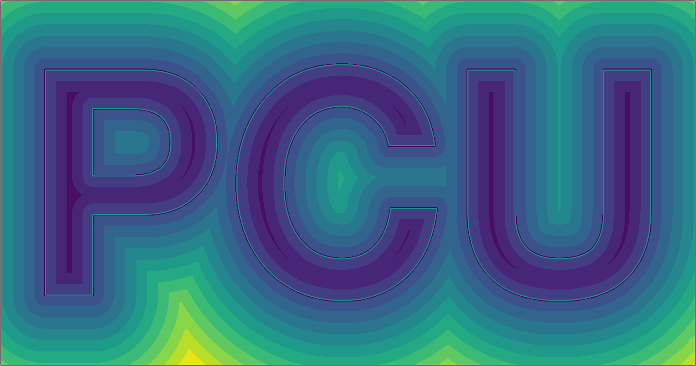

Computing Signed Distances to Triangle Meshes
Many applications require a signed distance function (SDF) representation for a 3D shape. For example, many shape reconstruction neural networks such as (DeepSDF)[https://arxiv.org/abs/1901.05103] require such a representation for training. Unfortunately, most 3D shape data is stored as a triangle mesh, making SDFs not readily available. Point-Cloud-Utils makes it very easy to extract signed distances from a triangle mesh.
Remark about mesh quality
To extract an SDF for a triangle mesh, the mesh must be of relatively good quality (manifold, watertight, no sliver triangles, etc...). To clean up a mesh for SDF extraction see Making a triangle mesh watertight.
SDF Overview
A signed distance function $f : \mathbb{R}^3 \rightarrow \mathbb{R}$ maps 3D points $x \in \mathbb{R}^3$ to the nearest distance between $x$ and some surface $S$. In other words: $$ f(x) = \min_{x' \in S} |x - x'|_2 $$ The zero level set of the SDF $f$ are precisely the set of points which lie on the surface. i.e. $$ S = {x : f(x) = 0} $$ The image below shows a plot of the SDF for the boundary of the letters PCU.
